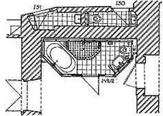
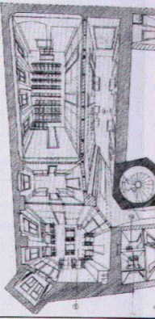
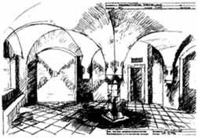

Weitere Datenübertragung Ihres Webseitenbesuchs an Google durch ein Opt-Out-Cookie stoppen - Klick!
Stop transferring your visit data to Google by a Opt-Out-Cookie - click!: Stop Google Analytics
Cookie Info. Datenschutzerklärung
 Altbau und Denkmalpflege Informationen - Startseite / Impressum
Altbau und Denkmalpflege Informationen - Startseite / Impressum
Inhaltsverzeichnis - Sitemap - über 1.500 Druckseiten unabhängige Bauinformationen
Die härtesten Bücher gegen den Klimabetrug - Kurz + deftig rezensiert
Bau- und Fachwerkbücher - Knapp + (teils) kritisch rezensiert
 EnEV-Befreiung gem. § 25 (17 alt)!
EnEV-Befreiung gem. § 25 (17 alt)!
Fragen?
Alles auf CD
27.10.06: DER SPIEGEL: Energiepass: Zu Tode gedämmte Häuser
Kostengünstiges Instandsetzen von Burgen, Schlössern, Herrenhäusern, Villen - Ratgeber zu Kauf, Finanzierung, Planung (PDF eBook)
Altbauten kostengünstig sanieren -
Heiße Tipps & Tricks gegen Sanierpfusch, Planungs-, Baustoff- und Handwerksschwindel im bestimmt frechsten Baubuch aller Zeiten, 2. verbesserte und umfangreich erweiterte Auflage! (PDF eBook + Druckversion)

Konrad Fischer
Planen, Bauen, Umbauen, Haus/Altbau Instandsetzen - Bausanierung
Funktionsplanung, Entwurfsplanung, Ausführungsplanung & Kostenplanung mit Einbindung der Bauherrn-Eigenleistung bei Bau-Instandsetzung, Modernisierung & Umbau
Sparsam Planen und Bauen im Altbau - Voraussetzungen und Methoden 1.15
In Unterseiten aufgeteilt: 1:
Einleitung: 1.1 1.2 1.3 1.4 Der Krieg gegen die
Bausubstanz: 1.5 1.6 1.7 1.8 1.9 1.10 1.11
Kapitel 1: Projektentwicklung: 1.12
Kapitel 2: Bauvorbereitung 1.13 1.14
Kapitel 3: Funktions-, Entwurfs-, Ausführungs- und Kostenplanung: 1.15
Kapitel 4: Konstruktionsplanung: 1.16 Haustechnikplanung: 1.17
Altbaugeeignete Reparaturverfahren und Alternativen zu zerstörerischen Sanierverfahren 1 2.2
Kapitel 5: Maßnahmen- und Kostenplanung
Kapitel 6: Bauablauf
Kapitel 7: Planungsvoraussetzungen
Planauszüge und Fotos:
Konrad Fischer, Hochstadt a. Main (soweit nicht anders angegeben)
Bei der Instandsetzung, der Modernisierung und dem Umbau von Baudenkmalen heißt Entwurf: Einpassen
der neuen Funktionen und wirtschaftlichste Konstruktionswahl im Hinblick
auf den späteren Bauunterhalt. Das kann bis zum Verzicht auf unanpaßbare,
nicht förderfähige und damit auch unwirtschaftliche Nutzung gehen.
Auch hochstilisierte Zeitgeisterei muß nicht immer sein. Für
unvermeidbare Bestandsverluste im Zusammenhang mit dem Umbauen und Modernisieren ist die dafür geeignetste Gebäudestruktur
zu suchen. Vielleicht ist sie stark zerstört oder erscheint noch am ehesten verzichtbar.
Darüber hinaus könnte der Befund mit allen Bau- und Verfallsphasen in untergeordneten
Nutzungsbereichen oder im musealen Umfeld auch übernommen werden. Manchmal ist eine
"Normalsanierung" überhaupt nicht finanzierbar. Dann schlägt
die Stunde dieser ultima ratio als letzter Ausweg. Mit den unaufschiebbaren
Notsicherungen und Bewerkstelligung einer konservierenden Hüllflächentemperierung
auf geringstem Technik- und Betriebskostenniveau - kann wertvolle Bausubstanz
entweder "eingemottet", oder eben für reduzierteste Nutzung oder museumsähnliche
Veranschaulichung instandgesetzt und so mit geringstem Budget erhalten werden.

Badeinbau im beengten Bestand eines Barockklosters
Im Bestand gilt nicht nur "neue" Architektur bzw. Baunorm. Die Anpassung an Zeitgeist, langfristig
kostentreibende und schadensanfällige Modernbauweise fällt zwar leicht, eine
selbstbewußte Planung darf sich aber besseren Zielen verpflichten.
Allerdings setzt das den altmodischen Demutsbegriff und entsprechende Gestaltung der Werkverträge voraus.

Weißenfels-Geleitshaus: Mit Bauwerks-Zentralperspektiven
können Trassenüberlagerungen und Raumgestaltungen eindeutig auf
Bestandskonflikte geprüft werden. Außerdem erhält der Bauherr
rechtzeitig einen Eindruch vom Planungsergebnis. Dazu braucht es keine
aufwendige CAD-Software, sondern wenige Zeichenstunden.
Eine bestandsschonende Planung kennt eigentlich keinen Konflikt mit einer auf Investitionsrendite und
Betriebskostenminimierung zielende Wirtschaftlichkeitsberechnung. Eingriffe beschränken sich
folglich überwiegend auf Reparaturen, unrentierliche Nutzung bleibt
kontrollierbar. Verzicht auf "Übernutzung" verringert auch den Aufwand
für nachträglichen Brandschutz, wobei es durchaus sinnvolle Kompensationsmaßnahmen geben mag. Eine
gewerkweise Kostenermittlung nach einzeln durchkalkulierten Leistungspositionen, sozusagen als teilweiser Vorgriff auf die Leistungsverzeichnisse, verbessert
dann auch die Budgetsicherheit - gut für den Ruf der Denkmalpflege. Das gelingt natürlich nur bei vorgezogener Ausführungsplanung.
Natürlich unterliegt das denkmalgerechte Entwerfen keiner festgeschriebenen Vorschrift, sondern dem Wandel
diesbezüglicher Ansichten. Das Entwerfen gerade in gestalterischer Hinsicht ist ein spannungsgeladener Prozeß.
Schnell ist der Planer, der Bauherr oder "die Denkmalpflege" verschnupft, erscheint der jeweils eigene Standpunkt
gefährdet. Die Frage nach zulässigem Eingriff, nach vertretbarem Gestaltwandel oder nach dem neubaubedingten
Bestandsopfer muß immer wieder neu entschieden werden.
In der Praxis spielt der Umgang mit dem historisch gewachsenen Erscheinungsbild der Bauteiloberflächen bzw.
Fassaden eine wichtige Rolle. Soll konservierend überputzt, übermalt oder überschlämmt werden, was
der nationale Historismus steinsichtig herauspräparierte? Was soll geschehen mit der durch Zementfugen,
Wasserglasfixativ und Kunstharzkleistern mißhandelten alten Fassade? Soll alles unter einem Leichentuch aus
frottiert-gewaschelten Pseudokalkputzen und überdichten Kalkersatzanstrichen bzw. hydrophobierten
Synthetik-Kalklasuren verschwinden? Sind teils festsitzende Zementmörtel immer zerstörerisch herauszuschlagen?
Wer verantwortet die damit einhergehenden Kostensteigerungen und Substanzverluste? Müssen historisch fragmentierte
Zustände frech und zusammenhanglos für sich nebeneinander dargestellt, vielleicht sogar verlustreich
freigelegt werden? Das Denkmal als Kaleidoskop oder in einheitlich gefälschter Fassung von Anno niemals?
Auch die zurückliegende Restaurierungsgeschichte verdient Respekt. Wenn wir dem Bestand gegen den weiteren
Verfall helfen, nur wo am Notwendigsten etwas reparieren, kostet das wenig Geld und wenig Substanz. Ein Gestaltwandel,
gar Fassadenneualtentwurf muß also nicht immer und unbedingt sein - die "originalgetreuen" Erfolge der
interpretierenden Denkmalpflege sind und bleiben Luxusbau. Vielleicht gelingt alternativ und naturbelassen sogar ein
ausstellungswürdiges Museumsexponat mit mehr Geschichte, als mancher Vitrinenfüller. Der Altbau selbst ist
auch mit einigen Metern Rissverschlüssen aus Kalkmörtel zufrieden. Ein kosten- und geschichtsbewußter
Bauherr auch.
Wenn es um Kostensparen geht, muß selbstverständlich auch die Eigenleistung des Bauherren im Sinne von
Do-It-Yourself berücksichtigt werden. Im Studium ist das ebenso wie die Gewerkleistung des Handwerkers sozusagen
"kein Thema". Umsomehr interessiert es den privaten, teilweise auch den öffentlichen Auftraggeber als effektive
Methode zur Kostensenkung. Hier braucht der Bauherr verständige Anleitung, denn die Eigenleistung muß ebenfalls
fachgerecht geplant werden. Einerseits dürfen ihre Möglichkeiten nicht überschätzt werden, denn sonst
bricht das Finanzierungskonzept in sich zusammen. Zur Eigenleistung gehören ja auch die realistischen Kosten für
Werkzeug, Transport und Baustoffe. Viele Baustoffhersteller verkaufen nur an Firmen bzw. über den Baustoffhandel und
derartige Baumaterialien sind dann nicht beim Baumarkt erhältlich sondern müssen zu wesentlich teureren Preisen
vom Handwerker bezogen werden. Außerdem erhalten Handwerker als Großeinkäufer wiederum oft wesentlich
bessere Preise als ein Bauherr mit seinen Kleinmengen.
Andererseits stellt sich bei ausgiebiger Eigenleistung auch das Gewährleistungsproblem an den Schnittstellen zur
Auftragsleistung des Handwerkers. Insofern kann die Eigenleistung auch zu entsprechenden Einschränkungen und Nachteilen
führen. Insofern ist es bei der Eigenleistung meist sinnvoll, klar in sich abzugrenzende Arbeitsabschnitte zu übernehmen,
die erst am Ende einer abgenommenen Handwerkerleistung zum Tragen kommen wie eine Oberflächenbeschichtung, eine Dachdeckung
oder ein Bodenbelag.
Wichtig ist auch die Frage, ob ein Bauherr durch Eigenleistung in Wirklichkeit Geld spart. Wenn er in seinem angestammten
Beruf mehr leisten würde, kann das ja effektiver Geld in die Baukasse spülen, als wenn er seine "freie" Zeit in
mühseliges Gegurke auf der Baustelle steckt und dabei im Vergleich zum Profi wesentlich langsamer und qualitativ minderwertiger
vorankommt. Hier kommt es immer wieder zu gravierenden Fehleinschätzungen aus dem blauäugigen "Das schaffen wir doch" am Anfang
eines Bauprojekts. Andererseits kann es auch im Bereich der Bauplanung wesentliche Arbeitsabschnitte gerade im Bereich
Bestandsaufnahme beim Altbau, vielleicht auch bei der Bauleitung bzw. Objektüberwachung geben, die ein einigermaßen
verständiger Bauherr - evtl. unter fachkundiger Anleitung des Planers - sinnvoll erbringen kann. Nach den vorliegenden
Erfahrungen sind auch hier deutliche Einsparungen durchaus im Rahmen des Möglichen.Selbstverständlich muß
ein derartiges Mitwirken auch im Planungsvertrag verankert werden und dann beim Honorar zu spürbaren Ersparnissen führen.
Wenn ein Bauherr allerdings zu viel Muskelhypothek investiert, kann das auch zu familiären Problemen führen,
im bösen Spruch zusammengefaßt: Haus fertig, Ehe auch.
Nicht zu vergessen beim Einsatz von Freundes- und Verwandschaftshilfe: Die Unfallgefahr bei Baulaien ist wesentlich größer
als bei Handwerksunternehmen. Genau deswegen müssen die willigen Helfer über eine Anmeldung bei der Berufsgenossenschaft
Bau / Bauberufsgenossenschaft angemeldet und damit versichert werden. Finger blau mag dabei ja noch angehen, aber Bein
ab?
Es sind also viele Aspekte beim sinnvollen Einsatz von Eigenleistungen am Bau - egal ob Altbausanierung oder beim Neubau -
zu würdigen. Eine ausgereifte Planung mit detaillierter Klärung des Maßnahmenbedarfs der Bauleistungen bis zur
letzten Schraube leistet dabei wertvolle Hilfe. Und ein Beschränken auf bewährt einfache Baumethoden rund um
die Massivbautradition (Stein auf Stein) auch. Im Systembau sieht es eben für den eigenleistungswilligen Bauherren
dagegen oft genug schlecht aus: Ihm fehlen die Montagehilfen, Arbeitsschutzausrüstungen und auch die speziellen
Gerätschaften ebenso wie die Arbeitserfahrungen, um die dennoch nicht gerade seltenen Systemschwierigkeiten und -widersprüche erfolgreich zu überwinden.

Weißenfels-Geleitshaus: Raumperspektive als Entwurfsmethode auch im Bestand
Noch nicht genug? Dann hier weiter zur Fortsetzung
Andere Seiten:
Baustoffseite
Energiesparseite
Finanzierung
Wirtschaftlichkeit
Arbeitshilfen/Formulare (z.B. Planungsvertrag für Altbau, Raumbuchsystem) zum Bestellen
Altbau und Denkmalpflege Informationen Startseite